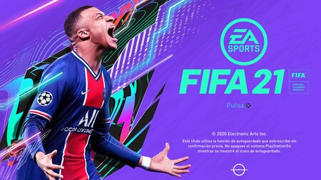
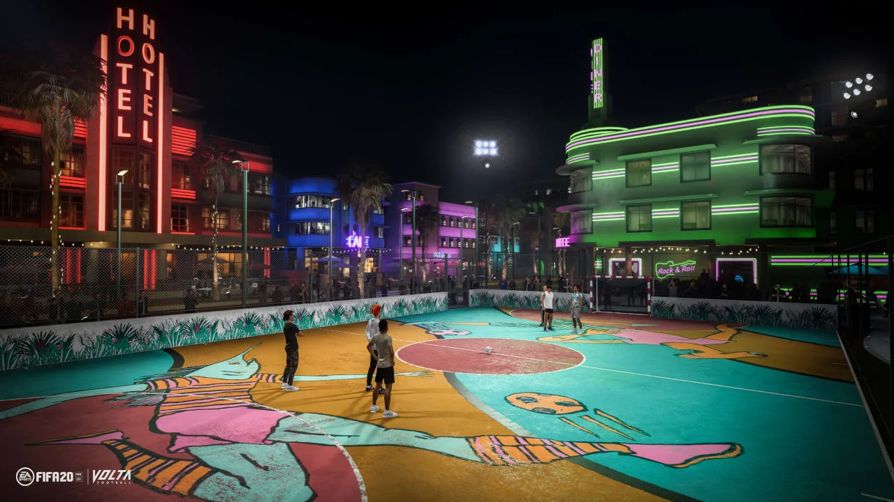

FIFA 21 es un videojuego de simulación de fútbol del año 2020 disponible para Microsoft Windows, PlayStation 4, Xbox One y Nintendo Switch el 9 de octubre de 2020, y aparte es el primer videojuego de la serie FIFA para Google Stadia, PlayStation 5 y Xbox Series X|S.

Novedades
FIFA 21 estrenará un sistema de Regate ágil: con un juego más rápido para uno contra uno y nuevos movimientos de habilidad, como la falsificación de rodar la pelota.
También se estrenará la Personalidad de posición para que los mejores jugadores puedan minimizar los fuera de juego y busquen huecos entre los defensas.
Otra novedad es el Modo Competidor, una mayor dificultad en los partidos contra CPU, dándole un mayor manejo de las habilidades, regates y tácticas, y volviendo el juego más difícil.
FIFA 21 incorporará también un Sistema de colisión natural que ofrecerá una visión más real de las colisiones que se producen en un partido, produciendo rebotes más naturales y menos caídas al luchar por el balón.
Por último otra novedad de jugabilidad serán las Desmarques Creativos y los Fundamentos del Fútbol, de los cuales estas serán sus características.
EXPRESA TU ESTILO
Elige el cabello, los rasgos faciales, la altura, los tatuajes y mucho más a medida que creas tu avatar masculino o femenino. A continuación, elija su equipo de la última ropa de calle y ropa de romper límites antes de desatar su aspecto único en las calles para que el mundo lo vea.

Trailer FIFA 21 Volta
VOLTA FOOTBALL te permite experimentar el auténtico fútbol callejero y fardar de estilo en jaulas y pistas de todo el mundo.
Crea tu futbolista, elige tu equipación y expresa tu estilo